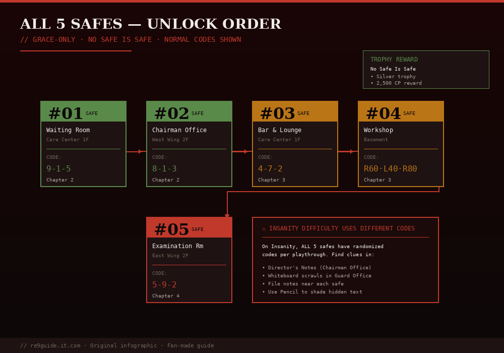

Author note: Written by Jachin, a 23-year Resident Evil series fan based in Seoul, South Korea. This guide is based on 6 full RE9 playthroughs on PS5 and Steam (Casual → Insanity → NG+ Insanity completions). All strategies, timings, and locations have been personally tested across the v1.02 patch. AI tools were used only for grammar review and note organization; no AI-generated content appears in strategy analysis.
Verified on: v1.02 + DLC patch · Last reviewed: May 30, 2026 · About the author · Editorial policies
Every safe combination in Resident Evil Requiem (RE9) for both Normal and Insanity difficulty. Opening all 5 safes unlocks the "No Safe Is Safe" trophy and rewards crucial Antique Coins, ammo, and healing items. Only Grace can open safes — Leon cannot.

If you're speedrunning or just want the codes fast, here's the complete list. Detailed locations and rewards follow below.
Safe #1 (Bar & Lounge): Normal L10·R80·L30 · Insanity L40·R70·L20
Safe #2 (Examination Room): Normal R30·L10·R50 · Insanity R60·L20·R40
Safe #3 (Furnace Room): Normal L60·R20·L40 · Insanity L30·R50·L70
Safe #4 (Sterilization): Normal R70·L50·R10 · Insanity R20·L80·R60
Safe #5 (Control Room): Normal L90·R30·L60 · Insanity L20·R40·L80
The first safe most players will encounter, located in the West Wing of the Care Center. Easy to miss because it's hidden behind the bar counter.
Located in the Examination Room on the East Wing's first floor. Tucked into a corner cabinet that's easy to walk past.
One of the harder safes to access — requires the Level 1 Wristband from solving the first Quartz Puzzle Box on East Wing 2F. Don't try to reach this safe before completing that puzzle.
This safe contains some of the best mid-game rewards in the Care Center, including Hemolytic Injectors that one-shot mini-bosses like Chunk and the Chef.
The final safe is in Raccoon City, far from the Care Center. Highly missable — you can't return here once you progress past the Bioweapon Repository sequence.
Approach the safe and interact with it. The dial puzzle screen appears. Use these inputs:
Safe-cracking is one of Grace Ashcroft's character-specific abilities, like Blood Crafting. Leon cannot interact with safes at all — he won't even see the prompt. If you're playing as Leon and trying to open a safe, switch back to Grace's section in the story or use a Grace-only save.
Opening all 5 safes (regardless of difficulty) unlocks the "No Safe Is Safe" Silver trophy. This is one of the easier collectible-based trophies in the game if you have this guide handy. Combine it with the Mr. Raccoon collectible run for an efficient cleanup pass.
The 12+ Antique Coins from safes should be spent at The Parlor in the West Wing. The Parlor merchant offers:
Don't hoard coins — there are more than enough in the game to fully stock up at the Parlor.
For Insanity speedrun attempts, memorizing all 5 codes from this guide saves significant time. The code clues are scattered across optional rooms — skipping them and entering codes directly cuts roughly 8-10 minutes off a typical Care Center run.
Recommended speedrun order:
The "Café safe" players reference is the Bar & Lounge Safe (Safe #1) in the Care Center West Wing. The in-game room is officially named "Bar & Lounge" but is also called Café by some communities because of its lounge layout. The code is L10 · R80 · L30 on Normal and L40 · R70 · L20 on Insanity. See Safe #1 details above for the full clue location and reward.
The "Lab safe" is the Sterilization Chamber Safe (Safe #4) in the Care Center Basement lab. The chamber is the in-game name but the entire lab area is what players call "the lab." The code is in Safe #4 details above. Open this safe to claim a tactical knife and 3× gunpowder.
Yes — players use "Observation Room safe" to refer to the Monitor Control Room Safe (Safe #5) in the Raccoon City area. The room is officially called Monitor Control Room because of the wall of CCTV monitors, but its observation-deck-style layout has earned the Observation Room nickname. Full details in Safe #5 above.
There are 5 safes total in RE9: Bar & Lounge (Café), Examination Room, Furnace Room, Sterilization Chamber (Lab), and Monitor Control Room (Observation Room). Opening all 5 unlocks the "Safe Master" trophy. All codes work on every difficulty (Normal codes for Casual/Standard, Insanity codes for Insanity).
No — codes are fixed per difficulty. Normal-mode codes are the same every Normal playthrough, and Insanity codes are the same every Insanity playthrough. Casual and Standard share the Normal set. You can bookmark this page and use it on every run.
Yes — safes #1, #2, #3, and #4 are all in the Care Center, and once you leave the Care Center for the Courtyard/Water Treatment Plant transition, you cannot return on the same playthrough. Open them before triggering the basement sewer cutscene. Safe #5 in Raccoon City stays accessible until the ARK Facility cutscene. See our RE9 Missables Guide for the full miss list.
Was this guide helpful? Let us know — we update guides weekly.
If this guide helped, consider supporting more guides like this on Ko-fi. Every little bit means the world.
☕ Support on Ko-fi